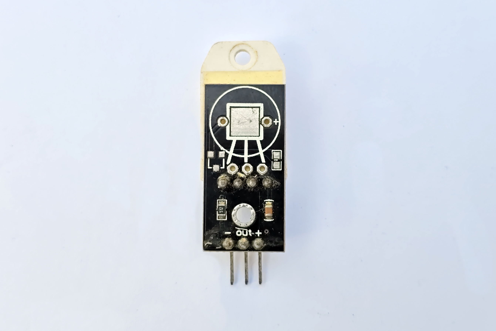
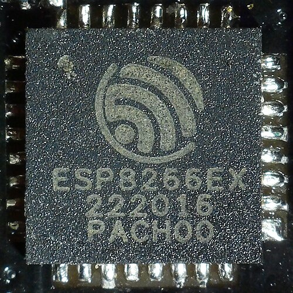

graph LR
S["📡 Sensores"] --> M["🧠 MCU"]
M --> A["⚙️ Atuadores"]
style S fill:#8be9fd,color:#282a36
style M fill:#bd93f9,color:#282a36
style A fill:#50fa7b,color:#282a36
Bloco 1: Revisão Rápida
Componentes que vocês já conhecem
LDR — Sensor de Luz

- Resistor que varia com luz →
analogRead() - Resistor pull-down de 10kΩ forma divisor de tensão
- Módulo pronto: saída analógica + digital (limiar ajustável)
- Usos: sensor crepuscular, alarme de claridade
DHT22 — Temperatura + Umidade

- Temperatura + umidade digital
- Protocolo proprietário (1-wire like)
- Precisão: ±0.5°C, ±2% UR
- Faixa: −40°C a +80°C
- Alta confiabilidade para projetos IoT
LCD I2C + Relé

- LCD 16x2 I2C: endereço 0x27 ou 0x3F
- Relé: switch eletromecânico para cargas AC/DC
- Isolação galvânica entre MCU e carga
- Relé suporta até 10A/250VAC
Motor DC + MOSFET (PWM)

- MOSFET (IRLZ44N): gate recebe PWM do MCU
analogWrite()controla velocidade (0-255)- Díodo flyback protege contra EMF reversa
- MOSFET canal N: fonte → GND, dreno → carga
Bloco 2: Sensores de Luz e Temperatura
Evoluindo do familiar
TCRT5000 — Sensor Infravermelho Reflexivo
graph LR
LED["IR Emissor"] -->|"Luz IR"| SUP[Superfície]
SUP -->|"Reflexão"| FOTO[Fototransistor]
FOTO -->|"Sinal"| MCU
SUP -->|"Clara: reflete"| FOTO
SUP -->|"Escura: absorve"| FOTO
style LED fill:#ff5555,color:#f8f8f2
style FOTO fill:#8be9fd,color:#282a36
- Emissor IR + fototransistor no mesmo encapsulamento
- Deteta superfície clara/escura por reflexão
- Saída digital (0/1) ou analógica (distância)
- Usos: seguidor de linha, detector de obstáculo proximal
DS18B20 — Temperatura OneWire

- Protocolo OneWire (1 fio de dados)
- À prova d'água (sonda metálica)
- Precisão: ±0.5°C (−55 a +125°C)
- Múltiplos sensores no mesmo barramento (ROM ID único)
TMP36 — Temperatura Analógica

- Saída analógica linear: 10 mV/°C
- Faixa: −40°C a +125°C
- Offset 500 mV = 0°C
- Barato e simples, porém menos preciso que DS18B20/DHT22
Comparação: Sensores de Temperatura
| Característica | DHT22 | DS18B20 | TMP36 |
|---|---|---|---|
| Protocolo | Proprietário | OneWire | Analógico |
| Precisão | ±0.5°C | ±0.5°C | ±2°C |
| Faixa | −40 a 80°C | −55 a 125°C | −40 a 125°C |
| Umidade? | Sim | Não | Não |
| À prova d'água | Não | Sim | Não |
| Múltiplos/bus | Não | Sim | Não |
| Custo | R$ 15-25 | R$ 10-20 | R$ 3-8 |
Bloco 3: Sensores de Distância
Ultrasom, laser e radar
HC-SR04 — Ultrassônico

- Emite pulso ultrassônico (40 kHz)
- Mede tempo do eco → distância
- Faixa: 2 cm a 4 m
- Precisão: ~3 mm
- 2 pinos: TRIG (saída) + ECHO (entrada)
VL53L0X — ToF Laser
graph LR MCU -->|"SDA/SCL"| VLX VCC["3.3V"] --> VLX VLX[VL53L0X
0x29] VLX -->|"Laser IR"| OBST style VLX fill:#ff79c6,color:#f8f8f2
- Time-of-Flight a laser infravermelho
- I2C (endereço 0x29)
- Faixa: 30 mm a 1.2 m
- Muito mais preciso que ultrassônico
- Ideal: robótica, drone, nível de tanque
RCWL-0516 — Radar Doppler
graph LR
RCWL[RCWL-0516] -->|"Antena TX"| ONDA
ONDA["Micro-ondas 3.2GHz"]
ONDA -->|"Atravessa"| PAREDE
PAREDE --> OBJ[Movimento]
style RCWL fill:#ff5555,color:#f8f8f2
- Radar de micro-ondas 3.2 GHz (Doppler)
- Deteta movimento através de paredes/vidro
- Faixa: ~7 m (ajustável)
- Não depende de calor (diferente do PIR)
Comparação: Sensores de Distância
| Característica | HC-SR04 | VL53L0X | RCWL-0516 |
|---|---|---|---|
| Princípio | Ultrasom | Laser ToF | Radar Doppler |
| Faixa | 2 cm – 4 m | 3 cm – 1.2 m | ~7 m |
| Precisão | ~3 mm | ~1 mm | Presença/ausência |
| Protocolo | GPIO (TRIG/ECHO) | I2C | Digital |
| Atravessa parede? | Não | Não | Sim |
| Custo | R$ 5-10 | R$ 15-25 | R$ 5-10 |
Bloco 4: Sensores Ambientais
Gás, solo, vibração, chuva, aceleração
MQ-2 — Gás Inflamável / Fumaça
graph LR
GAS[Gás GLP] --> MQ2[MQ-2]
MQ2 -->|"A0"| MCU
MCU -->|"ppm > limiar?"| ALERT["🚨 Alarme"]
style MQ2 fill:#ff5555,color:#f8f8f2
- Deteta GLP, metano, álcool, fumaça
- Saída analógica (ppm proporcional)
- Potenciômetro ajusta sensibilidade
- Aquecimento: precisa de ~20 s para estabilizar
Capacitive Soil Moisture

- Mede umidade do solo por capacitância
- Não oxida (diferente do resistivo)
- Saída analógica: seco ~530, molhado ~260
- Ideal: irrigação automática
SW-420 — Vibração
graph LR
SHOCK[💥 Vibração] --> SW[SW-420]
SW -->|"DO = HIGH"| MCU
MCU -->|"> limiar"| ALARM["🚨 Alarme!"]
style SW fill:#ffb86c,color:#282a36
- Switch de mercúrio / mola vibrátil
- Digital: HIGH quando vibra
- Potenciômetro ajusta sensibilidade
- Usos: alarme, deteção de terremoto
Sensor de Chuva
graph LR
RAIN[🌧️ Chuva] --> PLACA[Placa Sensora]
PLACA -->|"A0"| MCU
MCU --> ALERT2["🔔 Fechar janela!"]
style RAIN fill:#8be9fd,color:#282a36
- Placa com trilhas resistivas expostas
- Água fecha circuito → resistência cai
- Saída analógica (intensidade) + digital (limiar)
- Proteger conexões da água!
MPU-6050 — Acelerômetro + Giroscópio

- 6 eixos: 3 accel + 3 gyro
- I2C (endereço 0x68)
- Aceleração: ±2/4/8/16g
- Giroscópio: ±250/500/1000/2000°/s
- Usos: drone, robô balanceiro, IMU
Sensor Hall — Campo Magnético

- US1881: digital (liga/desliga com ímã)
- SS49E: analógico (intensidade do campo)
- Usos: velocímetro (ímã no eixo), contador de voltas
PIR HC-SR501 — Presença (IV)

- Deteta calor infravermelho em movimento
- Faixa: ~7 m, ângulo 120°
- 2 potenciômetros: sensibilidade e tempo
- Usos: alarme, iluminação automática
Bloco 5: Sensores de Corrente e Tensão
Monitoramento energético
INA219 — Corrente e Tensão (I2C)

- Mede corrente via shunt integrado
- Mede tensão do barramento
- I2C (0x40 ou 0x41)
- Faixa: até 26V, ±3.2A
- Ideal: monitorar consumo de projetos IoT
Divisor de Tensão — Medição de Tensão
graph LR
VIN["Bateria 12V"] --> R1[100kΩ]
R1 --> VOUT["Vout (ADC)"]
VOUT --> R2[33kΩ]
R2 --> GND
style R1 fill:#ff5555,color:#f8f8f2
style R2 fill:#8be9fd,color:#282a36
- 2 resistores em série:
Vout = Vin × R2/(R1+R2) - Permite ler tensões acima de VCC
- Ex: bateria 12V → ADC 3.3V (fator 4.03)
- Resistores altos (> 10kΩ) reduzem consumo
Bloco 6: Atuadores — Motores e Movimento
Controlando o mundo físico
SG90 — Servo Motor

- Rotação precisa: 0° a 180°
- Controle via PWM (biblioteca Servo)
- Torque: ~1.8 kg·cm (4.8V)
- Usos: braço robótico, fechadura, câmera pan/tilt
28BYJ-48 + ULN2003 — Motor de Passo

- Motor de passo 5V, 4 fases
- Driver ULN2003 (transistores Darlington)
- 2048 passos/volta (half-step)
- Usos: dispensador, cortina automática, foco de câmera
WS2812B — LED Endereçável (Neopixel)

- LED RGB com controlador integrado
- 1 pino de dados controla N LEDs (daisy-chain)
- Cada LED: 16M cores, endereço individual
- Usos: indicação visual, fita decorativa, matriz de LEDs
Solenóide + Válvula Solenóide

- Solenóide: eletroímã linear (puxa/empurra)
- Válvula solenóide: abre/fecha fluxo de líquido
- Controlados via MOSFET ou relé
- Atenção: consomem muita corrente (~500mA+)
- Usos: fechadura elétrica, irrigação
Bloco 7: Displays Alternativos
Além do LCD 16x2
OLED SSD1306 — Display 128×64 (I2C)
graph LR MCU -->|"SDA/SCL"| OLED VCC["3.3V"] --> OLED OLED[OLED SSD1306
0x3C] OLED --> CONTENT["📟 Texto/Formas/Bitmaps"] style OLED fill:#8be9fd,color:#282a36
- Display gráfico monocromático 128×64
- Alto contraste, ângulo de visão amplo
- I2C (0x3C ou 0x3D)
- Consome muito pouco (~10 mA)
- Texto, formas geométricas, bitmaps
TM1637 — Display 4 Dígitos
graph LR
MCU -->|"CLK/DIO"| TM[TM1637]
VCC["5V"] --> TM
TM --> DIGITS["8 8 8 8"]
DIGITS --> EX1["25.5°C"]
DIGITS --> EX2["12:30"]
style TM fill:#ffb86c,color:#282a36
- 4 dígitos 7 segmentos + 2 pontos
- Protocolo próprio (2 fios: CLK + DIO)
- Ideal para: relógio, temperatura, contagem
- Muito barato e simples de usar
Bloco 8: Comunicação IoT
Protocolos e conectividade
Protocolos: I2C vs SPI vs OneWire vs UART
| Protocolo | Fios | Velocidade | Dispositivos | Exemplos |
|---|---|---|---|---|
| I2C | 2 (SDA+SCL) | 100-400 kHz | 127 endereços | OLED, MPU6050, INA219 |
| SPI | 4 (MOSI+MISO+SCK+CS) | Até 10 MHz | Ilimitado (CS) | SD card, LoRa |
| OneWire | 1 (dados) | ~16 kbps | Múltiplos (ROM ID) | DS18B20 |
| UART | 2 (TX+RX) | 9600-115200 baud | 1-1 (ponto a ponto) | GPS, Bluetooth HC-05 |
MQTT — Protocolo IoT por Excelência
graph LR
SENSOR[ESP8266] -->|"publish"| BROKER["☁️ Broker"]
BROKER -->|"subscribe"| APP["📱 Dashboard"]
style BROKER fill:#bd93f9,color:#f8f8f2
- Publish/Subscribe via broker central
- Leve: header mínimo de 2 bytes
- Tópicos hierárquicos:
casa/sala/temp - QoS: 0, 1, ou 2
ESP8266 — Wi-Fi Nativo + HTTP

- Wi-Fi integrado (802.11 b/g/n)
- HTTP GET/POST para APIs REST
- Compatível com ThingsBoard, Blynk, Firebase
- Substitui Arduino + shield Ethernet
Atividade: Sistema de Monitoramento Inteligente
Em grupos, escolham:
Justificar cada escolha com base em:
- Faixa de medição/atuação
- Precisão requerida
- Consumo de energia
- Custo
Resumo da Aula
Próxima aula: Projeto prático integrando sensores + atuadores + Wi-Fi